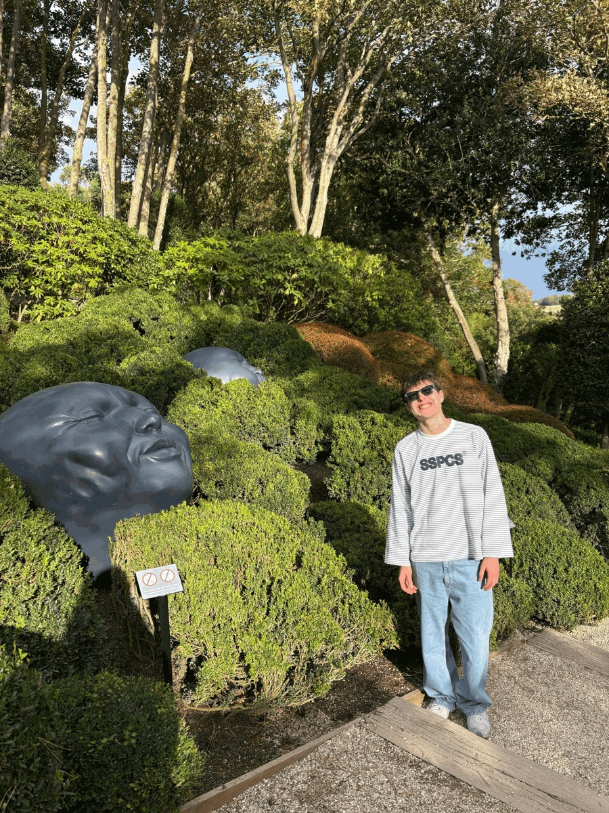
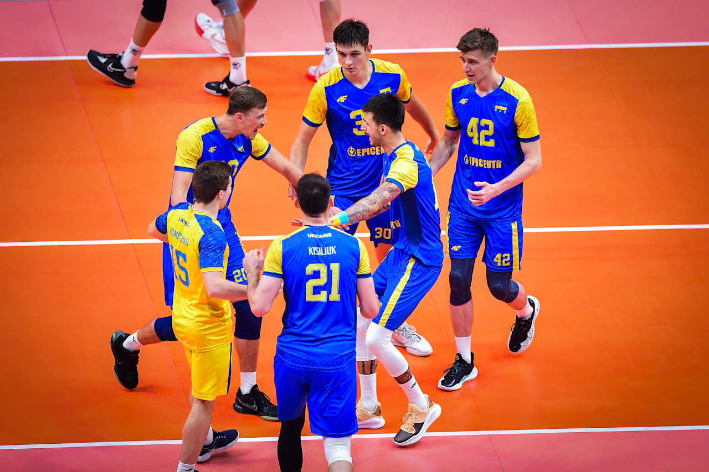

Hi, I'm Rosty
I'm Rostyslav Chikh. I've lived in the Netherlands for 4+ years, I work as a planner at Zorgbalie, and after finishing Scalda MBO 4 Software Development in 2 years I now study IT at HZ University of Applied Sciences.
On the side I build software: a product called VroegSignaleren with researchers from HZ, and tools for freelance clients who want to optimise their business. I really enjoy automating and optimising things, at work and at home.
Use the navigation bar above to look around.

My interests
- Playing volleyball and video games.
- Spending time with my girlfriend.
- Building fun stuff like Telegram bots.
Every now and then I also jump into Rust or Dota 2 with friends - a good way to unwind after a day of coding.
